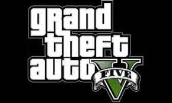
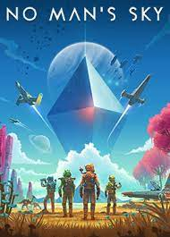
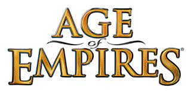
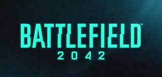
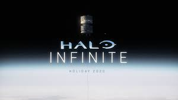
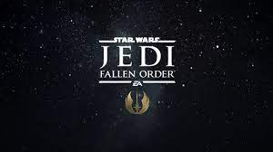
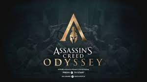
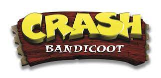

Videogame Genres
Every game is part of a genre. A genre is a category of style or gameplay that the user can expect when playing
the game. Down below is a list of typical video game genres and what to expect from them.
Sandbox Games
A sandbox game is often associated with player choice. There is usually no grand goal to accomplish but instead
a variety of different tasks that can be completed in different ways. With such a considerable amount of free will,
this inspires creativity, experimentation, and an overall more immersive experience. Down below are some examples of
sandbox games.
Mincraft

Minecraft’s first release was in May of 2009 and was made by Markus “Notch” Persson. The game revolves around living in
a blocky world where your only goal is to build/do whatever you want.
Grand Theift Auto Five
Grand Theft Auto is a game released in 2013 developed by Rockstar North and published by Rockstar Games. The game allows
the player to do missions or do whatever they want to do in or outside the city.
No Man's Sky
No Man’s Sky is a survival sandbox game developed by Hello Games. The game revolves around exploring a massive universe.
Being able to build, explore, or do missions/challenges.
Real-time Strategy (RTS)
Typically, RTS games include resource management, map management, and often have a top-down view. Down below are examples of RTS games.
World of Warcraft

You play as a powerful hero who fights monsters and explores and fight in dangerous dungeons.
Age of Empires
In Age of Empires players expand and imporve their empire by expanding their culture to the
next technological age.
First Person Shooter (FPS)
FPS games are usually consisted of shooting the enemy to win the objective. These games tend to be more on the violent side. Down below
are some examples of FPS games.
Battle Field 2042
Battlefield 2042 is an upcoming FPS game developed by DICE and published by Electronic Arts. Typically in battlefield games players fight in
massive multiplayer maps to complete the objective.
Halo Infinite
Halo Infinite is an upcoming FPS game developed by 343 Industries and published by Xbox Game Studios. In Halo games, the objective is to contain
the Flood, an infectious alien parasite.
Action-adventure
Action-adventure games stick out in their own special way because of their deep focus of plot and combat through a story or campaign.
Down below are some instances of Action-adventure games.
Star Wars Jedi: Fallen Order
Star Wars Jedi: Fallen Order is a game developed by Respawn Entertainment and published by Electronic Arts. The game revolves around playing a
campaign (story) set after the events of Star Wars: Revenge of the Sith.
Assassins Creed Odyssey
Assassin’s Creed Odyssey is a videogame developed by Ubisoft Quebec and published by Ubisoft. It is the eleventh installment of the Assassin’s
Creed series and is about a secret mythological history set durn the Peloponnesian
Platformer
The platformer genre is one of the first genres to appear in gaming history. Platformers consist of running, jumping, and climbing through obstacles
to complete the objective or challenge. Below are some examples of platformer games.
Crash Bandicoot
Crash Bandicoot is a video game franchise initially developed by Naughty Dog. The game is about the adventures of Crash, whose goal is to stop Doctor Neo
Cortex, the main villain, from world domination and to rescue his girlfriend Tawna.